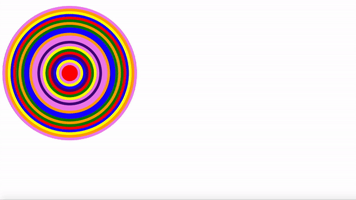

Home
Welcome to my website. It's a constant work in progress. The site you visit today might not be the site you visit tomorrow. You can draw or play a game of Galaga on this screen, otherwise, feel free to browse around to learn more about me and my various projects.
About
Portfolio
These are various projects I have created since starting my journey to web development mastery. It will also include any projects that I've been involved with. Some of these came from various learning modules found online, some were done specifically by me, and some were done from the bootcamp I attended (NuCamp). What they all have in common is that I'm very proud of them, and I'm looking forward to adding more projects here as I continue on my path towards web development. Just click on the project names, and it'll take you to the server hosting the project. Thank you for checking them out!
|
This one was a lot of fun to make. It's the first mockup
project that I've worked on since I started doing web dev projects in high school.
On the open learning resource, The Odin Project, one of the very first projects
you do is to create a mockup of Google. For the most part, I got everything. There's a few
minor things that I missed, but overall, it got me back into design layout mode, and made me realize that this
is definitely a skill that I still have. |
This is a project courtesy of NuCamp, the current establishment where I'm taking classes to learn in depth web development concepts. Essentially, the game is played like this. Both sides have the same faces, except the left side has one extra face. It's your job to click on the face that is extra, prompting the game to reset with 5 more faces, progressively getting more difficult. This project taught me a lot about javascript loop functions, and creating/erasing html functions using Javascript to alter the page. The lessons I learned in this concept are used in this website under the "Music Projects" tab, and I'm sure I'll be using these very concepts for years on end. |
|
This project was provided by NuCamp. This one I had a harder time figuring out than all the others on this list. Essentially, the website asks you to guess what color it picked, you guess until you get it right, then it tells you how many guesses you had, and changes the background color accordingly. This was my very first introduction to changing styles in Javascript, but that wasn't what was throwing me off. What was getting me stuck was when the user enters a number that's not in the list, it should prompt an error message, and I was having a hard time figuring out how to get the function to take a string, and compare it with an array of pre-determined colors, to check if it's at least in that color list. I eventually figured it out using the indexOf() function, and now that I know how to do that, I'll imagine this project will have taught me a valuable lesson in JavaScript. |
This one can only be played in your console at the moment, so if you don't know how to do that and you want to try
out the game, open Google Chrome, Right click on the page, click on Inspect, find the button that says console, then type in "game();".
This will get a game of rock paper scissors going, and it's you against the computer. The computers response is completely randomized so,
just like in real life, you never know what it will do. The game goes on for a total of five rounds, and whoever has the most points at the end wins.
Simple. Fair. This challenge came from The Odin Project, and it gave me a lot of insight in handling for loops, and if conditionals. Another concept that I'll need
a full grasp on in order to great things using JavaScript. |
| 
This practice came courtesy of NuCamp. All this one does is it starts a for loop, and in that foor loop, it generates a random color and creates a new div. The div will keep gradually changing in heights and placement on the screen until the loop ends. In order to get, what I like to call, the "rave" effect, a piece of HTML meta code (http-equiv="refresh"), and this will refresh the page every few seconds. I can not imagine a time where I will ever need to use that code outside of a fun project, but it's good to know that it's available if needed. This project taught me an endless amount of information about DOM manipulation, and how to create new DOM with JavaScript, and edit their styles in the process. |
Music Projects
Contact
Fill out the form below, and I'll make sure to get back into contact with you in 24-48hrs! Thank you!